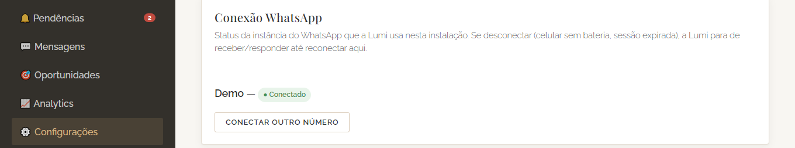

Concierge digital para clínicas odontológicas
Inteligência Artificial auxilia.
Inteligência Natural dirige.
A Lumi atende o WhatsApp da sua clínica 24 horas por dia — gerencia sua agenda e recupera pacientes que demonstraram interesse mas nunca voltaram a conversar. Você continua no controle, através de um painel de gestão completo por trás da conversa.
Em uso real, em produção, numa clínica odontológica
A dor por trás da agenda cheia
Responder pacientes e leads no WhatsApp está consumindo mais tempo do que você gostaria?
Não dá tempo de fazer tudo sozinho — atender paciente, cuidar da equipe, tocar o consultório inteiro. O WhatsApp vira a última prioridade do dia, e é exatamente aí que as oportunidades escapam.
Um paciente novo pergunta o preço da primeira consulta. Ninguém vê a mensagem até segunda de manhã — ele já resolveu em outra clínica.
Alguém pergunta um horário, recebe uma resposta corrida, some no meio da conversa. Ninguém percebe — até ser tarde demais pra trazer de volta.
Fora do horário de atendimento, pra quem manda mensagem a clínica simplesmente não existe até o próximo dia útil.
O custo não é só em oportunidade de pacientes — é o tempo que sobra pra fazer o que realmente importa: o seu atendimento tão bom que faz com que eles sempre voltem.
Como ela entra na sua clínica
Funciona do jeito que a sua agenda já funciona
Sem trocar de sistema, e sem precisar ter nenhum sistema hoje.
Já usa um sistema de agenda
Integração direta
A Lumi passa a operar dentro do sistema que sua recepção já usa hoje — sem substituir nada, sem migrar histórico, sem treinar a equipe num sistema novo.
Não usa nenhum sistema
Lumi Standalone
Construímos a agenda do zero, junto com a concierge digital. Não precisa ter nada pronto hoje — o onboarding é mais leve justamente por não depender de integrar com terceiro nenhum.
Antes de tudo
Uma conversa de verdade, não um formulário
Nos dois caminhos, tudo começa com uma entrevista de personalização com você — como quer ser apresentada aos pacientes, seu tom de voz, o que a clínica atende (e o que não atende), preço, regras específicas do seu jeito de atender. A Lumi vira uma extensão do seu atendimento: fala como você fala, cuida como você cuida, se importa como você se importa.
Como soa na prática
Uma conversa de verdade, do jeito que o paciente vive
Ilustração de uma conversa típica — sem menu, sem robô engessado.
O que nenhum chatbot tem
Por trás da conversa, um painel de gestão completo
A maioria das assistentes de IA é só a conversa. A Lumi vem com o painel que garante que você nunca perde a visão — nem o controle.
Agenda
Visão em tempo real do que está marcado — a mesma agenda que sua recepção já usa, sem cópia paralela.
Mensagens
Histórico de toda conversa, com a equipe podendo assumir a qualquer momento — a IA nunca fica sem supervisão.
Oportunidades
Funil de resgate: recupera sozinha o paciente que começou a marcar consulta e sumiu no meio do caminho.
Analytics
Consultas criadas, confirmadas, canceladas, taxa de recuperação — números reais, não estimativa.
Pendências
Tudo que a Lumi encaminhou pra um humano decidir, com urgências sempre em primeiro lugar.
Configurações
Horários, pausar a Lumi pra todo mundo, e reconectar o WhatsApp sozinho — sem depender de suporte técnico.
Confiança
Feita pra clínica de saúde, não adaptada de um bot genérico
Não substitui o que você já usa
Entra por cima do sistema que a clínica já tem, ou funciona sozinha se não tiver nenhum. Nunca pede pra trocar de sistema de gestão.
Dados isolados por clínica
Banco de dados e número de WhatsApp próprios de cada clínica — nunca uma base compartilhada entre clientes.
Nunca inventa, nunca chuta
Toda confirmação passa pelo sistema de verdade primeiro. Fora do que ela sabe resolver, vira aviso pra um humano na hora.
Monitorada de verdade
Rotina própria de checagem várias vezes ao dia, com alerta automático — e backup diário testado de ponta a ponta.
“A inteligência artificial cuida do repetitivo. Quem decide continua sendo você.”A lógica por trás de cada regra da Lumi
Investimento
Você paga pelo que usa
Basic
Um profissional
R$400/mês
Cobrado mês a mês. Cancela quando quiser.
R$400R$320/mês
Cobrado R$3.840/ano · economia de R$960 · em até 12x sem juros.
- Agendar, confirmar, cancelar e remarcar via WhatsApp
- Lembretes automáticos de consulta
- Painel de Agenda e Mensagens
Pro
Múltiplos profissionais
R$700/mês
Cobrado mês a mês. Cancela quando quiser.
R$700R$560/mês
Cobrado R$6.720/ano · economia de R$1.680 · em até 12x sem juros.
- Tudo do Basic
- Funil de resgate automático
- Painel completo — Analytics, Oportunidades, Pendências
Advanced
Multi-unidade
Sob consulta
Condições combinadas conforme o número de unidades.
- Tudo do Pro
- Mais de uma unidade — contrato único, desconto por volume
- Marca própria no painel (sua logo, sem a marca Lumi)
- Atendimento dedicado
Setup único de R$400 na implantação — inclui a entrevista de personalização e a configuração inicial. O plano anual pode ser parcelado em até 12x sem juros no cartão de crédito.
Perguntas
O que toda clínica pergunta antes de decidir
Preciso trocar de sistema de agenda?
Não, se você já usa um sistema — a Lumi passa a operar dentro dele. E se você não usa nenhum, também não precisa: a gente monta a agenda do zero, junto com a concierge digital.
Meus pacientes vão perceber que é um robô?
A Lumi nunca esconde que é uma concierge digital — mas o objetivo nunca foi parecer humana, é ser útil e rápida. E a qualquer momento a equipe pode assumir a conversa direto pelo painel.
E se ela errar e prejudicar a clínica?
Ela nunca confirma nada sem checar a agenda de verdade primeiro — não existe "ela inventou um horário". Qualquer coisa fora do que ela sabe resolver vira uma pendência pra um humano decidir.
Meus dados ficam seguros?
Cada clínica tem banco de dados e número de WhatsApp próprios, isolados — nunca uma base compartilhada entre clientes.
E se o WhatsApp cair?
O painel mostra o status da conexão em tempo real, e a própria equipe consegue reconectar sozinha, gerando um QR code novo — sem depender de suporte técnico.

Recupere o tempo pra fazer o que só você pode fazer
Uma conversa de 15 minutos, sem compromisso — você vê a Lumi cuidando do WhatsApp de verdade, na sua própria clínica, enquanto você cuida do paciente.